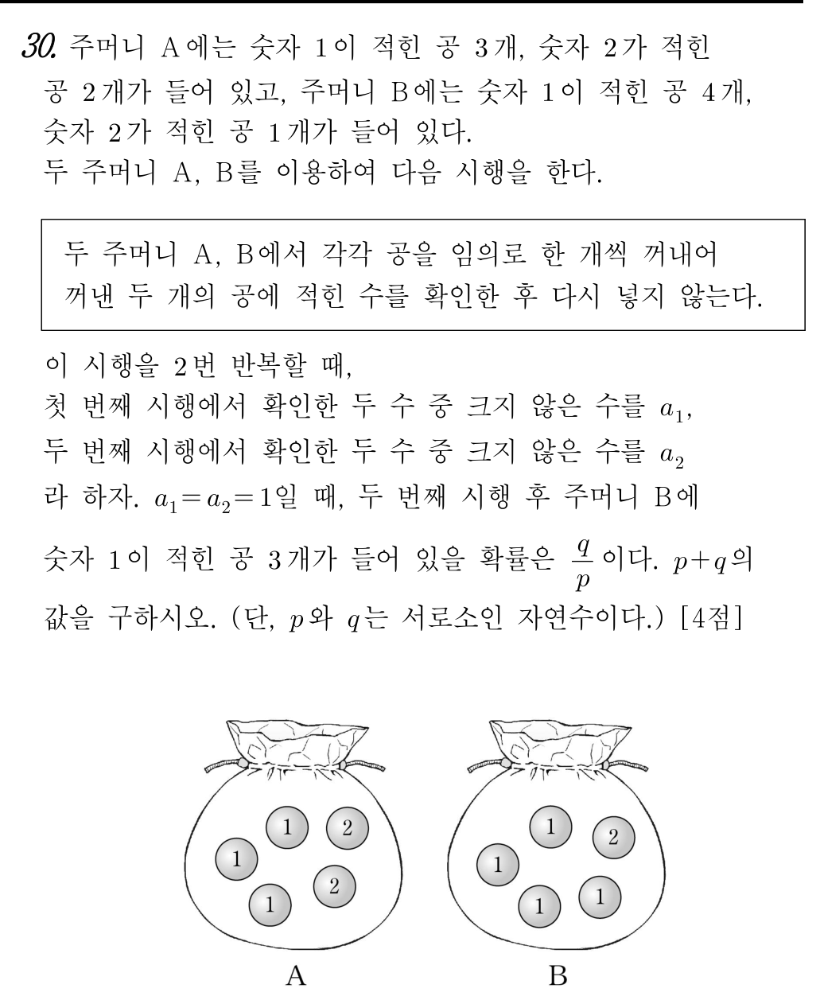

📘 [2026학년도 10월 고3 확통 30번] 두 주머니에서 비복원 추출과 조건부확률📘 [2026 AY Oct Exam Grade 12 Prob&Stats #30] Conditional Probability with Sampling Without Replacement from Two Bags
초등학생도 1단계부터 차근차근 따라가면 수능·학력평가 본문항까지 스스로 풀 수 있는 단계별 디딤돌 퀴즈입니다.Elementary-to-advanced step-by-step scaffolding quiz. Instant scoring & explanations upon selection.

📋 원본 문항 핵심 요약 및 목표📋 Official Problem Summary & Objectives
두 주머니에서 비복원 추출과 조건부확률
전체 $400$가지에서 $a_1=2$($32$가지)·$a_2=2$($32$가지)를 빼 분모 $336$가지를 구하고, $\mathrm{B}$에서 $(1,2)$ 또는 $(2,1)$을 뽑는 분자 $48+48=96$가지를 구해 조건부확률 $\dfrac{96}{336}=\dfrac{2}{7}$ 도출하기
수학자료실의 PDF 자료는 독립시행의 무수한 우연이 필연적인 정규분포의 종 모양 곡선으로 수렴하는 과정을 시각화합니다.
• [이항계수의 삼각형] 파스칼 삼각형의 조합 수열이 이항분포 $\mathrm{B}(n, p)$의 이산 확률기둥들로 쌓여가는 단계별 구축 과정
• [중심극한정리의 출현] 시행 횟수 $n$이 증가함에 따라 거친 계단 모양의 히스토그램이 매끄러운 가우스 정규분포 곡선 $N(\mu, \sigma^2)$으로 완벽하게 수렴
• [수학적 의미] 개별 사건은 불확실하지만, 전체의 통계적 집합은 수학의 가장 우아한 대칭 곡선을 따른다는 경이로움을 하단 자료에서 체득해 보세요.
The archive's flipbook proof materials demonstrate how fundamental mathematical principles converge smoothly frame by frame. Explore the interactive dynamic geometry applets below.
🔰 제0단계 · 수학 기호 번역기🔰 Step 0 · Mathematical Symbol Translator
🔰 1단계 · [초등 수 비교와 규칙 번역] '두 수 중 크지 않은 수($a_n$)'가 언제 $1$이 되고 언제 $2$가 될까?🔰 Step 1 · [Elementary Comparison] When is the 'number not larger ($a_n$)' equal to $1$ vs. $2$?
먼저 알아야 할 지식
문제에서 **'두 수 중 크지 않은 수'**란 두 숫자를 비교했을 때 **더 작거나 같은 수**를 뜻합니다! 주머니 속 공에는 숫자 $1$ 아니면 $2$만 적혀 있으므로 네 가지 경우를 직접 비교해 봅시다.- $(\mathrm{A}=1,\ \mathrm{B}=1) \implies$ 크지 않은 수는 **$1$**
- $(\mathrm{A}=1,\ \mathrm{B}=2) \implies 1$과 $2$ 중 크지 않은 수는 **$1$**
- $(\mathrm{A}=2,\ \mathrm{B}=1) \implies 2$와 $1$ 중 크지 않은 수는 **$1$**
- $(\mathrm{A}=2,\ \mathrm{B}=2) \implies$ 둘 다 $2$이므로 이때만 크지 않은 수가 **$2$**!
🌿 2단계 · [초등 곱셈과 전체 가짓수] 두 주머니에서 각각 $2$번 연속 공을 꺼내는 전체 경우의 수($400$가지)🌿 Step 2 · [Elementary Multiplication] Total outcomes ($400$) for drawing $2$ balls without replacement from both bags
먼저 알아야 할 지식
확률을 정확히 계산하려면 같은 숫자가 적힌 공이라도 서로 다른 공(예: $1_a, 1_b, 1_c, 2_a, 2_b$)으로 번호표를 붙여 구별해서 세어야 모든 경우가 똑같은 가능성을 가집니다.- **주머니 $\mathrm{A}$ (공 $5$개)**: $1$회차에 꺼낼 수 있는 공 $5$가지 $\times$ 다시 넣지 않고 $2$회차에 남은 $4$개 중 꺼내는 공 $4$가지 $= 5 \times 4 = 20$가지
- **주머니 $\mathrm{B}$ (공 $5$개)**: 마찬가지로 $1$회차 $5$가지 $\times$ $2$회차 $4$가지 $= 5 \times 4 = 20$가지
- **두 주머니 동시 진행**: 주머니 $\mathrm{A}$의 $20$가지 각각에 대하여 주머니 $\mathrm{B}$의 $20$가지가 짝지어지므로 전체 경우의 수는 $20 \times 20 = 400$가지입니다!
🌱 3단계 · [여사건 쪼개기 ①: 1회차 탈락] $1$회차에 $a_1 = 2$가 되어 탈락하는 경우의 수($32$가지) 직접 유도하기🌱 Step 3 · [Complement Part 1: Round 1 Failure] Counting the $32$ outcomes where $a_1 = 2$
먼저 알아야 할 지식
조건부확률의 분모는 **$a_1 = 1$이고 $a_2 = 1$인 사건 $E$의 경우의 수 $n(E)$**입니다. 이를 직접 세는 것보다, 전체 $400$가지에서 **탈락하는 경우($a_1 = 2$ 또는 $a_2 = 2$)**를 빼는 여사건 방법이 훨씬 쉽습니다! 먼저 **$1$회차에 $a_1 = 2$가 되는 경우(즉 $1$회차에 $\mathrm{A}, \mathrm{B}$ 모두 $2$를 꺼내는 경우)**를 차근차근 세어 봅시다.- **주머니 $\mathrm{A}$ ($1$이 $3$개, $2$가 $2$개)**: $1$회차에 숫자 $2$인 공을 꺼내는 방법 **$2$가지** $\times$ $2$회차에 남은 공 $4$개 중 아무거나 꺼내는 방법 **$4$가지** $\implies 2 \times 4 = 8$가지
- **주머니 $\mathrm{B}$ ($1$이 $4$개, $2$가 $1$개)**: $1$회차에 유일한 숫자 $2$인 공을 꺼내는 방법 **$1$가지** $\times$ $2$회차에 남은 공 $4$개 중 아무거나 꺼내는 방법 **$4$가지** $\implies 1 \times 4 = 4$가지
- Bag A (three $1$s, two $2$s): $2$ choices for a '$2$' in Round 1 $\times$ $4$ remaining balls for Round 2 $= 2 \times 4 = 8$ ways.
- Bag B (four $1$s, one $2$): $1$ choice for the single '$2$' in Round 1 $\times$ $4$ remaining balls for Round 2 $= 1 \times 4 = 4$ ways.
🌱 4단계 · [여사건 쪼개기 ②: 2회차 탈락과 분모 확정] $a_1 = a_2 = 1$인 분모 $n(E) = 336$ 구하기🌱 Step 4 · [Complement Part 2 & Denominator] Confirming zero overlap and finding $n(E) = 336$
먼저 알아야 할 지식
이제 **$2$회차에 $a_2 = 2$가 되어 탈락하는 경우**를 세어 봅시다.- $1$회차와 $2$회차의 역할만 바뀐 대칭 구조이므로, $2$회차에 $\mathrm{A}$가 $2$를 꺼내고($2 \times 4 = 8$가지) $\mathrm{B}$도 $2$를 꺼내는($1 \times 4 = 4$가지) 경우의 수 역시 똑같이 **$8 \times 4 = 32$가지**입니다.
- **핵심 체크 (중복 여부)**: 혹시 $1$회차에도 $a_1 = 2$이고 $2$회차에도 $a_2 = 2$인(두 번 모두 탈락하는) 겹치는 경우가 있을까요? **절대 없습니다($0$가지)!** 왜냐하면 주머니 $\mathrm{B}$에는 숫자 $2$가 적힌 공이 **딱 $1$개뿐**이고 꺼낸 공을 다시 넣지 않으므로, $\mathrm{B}$에서 $1$회차와 $2$회차에 연속으로 $2$를 꺼내는 것은 불가능하기 때문입니다!
🌳 5단계 · [분자 사건 번역] 주머니 $\mathrm{B}$에 숫자 $1$인 공이 $3$개 남아 있으려면 $\mathrm{B}$에서 무엇을 꺼내야 할까?🌳 Step 5 · [Translating the Target Event] What must Bag $\mathrm{B}$ draw so that three $1$s remain in $\mathrm{B}$?
먼저 알아야 할 지식
이제 조건부확률의 **분자 $n(E \cap F)$**, 즉 **'$a_1 = a_2 = 1$이면서 동시에 $2$번째 시행 후 주머니 $\mathrm{B}$에 숫자 $1$이 적힌 공이 $3$개 남아 있는 경우'**를 구할 차례입니다!- 처음에 주머니 $\mathrm{B}$에는 **숫자 $1$이 $4$개, 숫자 $2$가 $1$개** 들어 있었습니다.
- $2$번 시행 후 주머니 $\mathrm{B}$에 **숫자 $1$이 $3$개** 남았다는 것은, $2$번의 시행 동안 주머니 $\mathrm{B}$에서 빠져나간 공 $2$개가 **숫자 $1$ 한 개($4 - 3 = 1$)와 숫자 $2$ 한 개**라는 뜻입니다!
- 즉, 주머니 $\mathrm{B}$가 $(1\text{회차}, 2\text{회차})$에 꺼낸 공의 숫자는 반드시 **케이스 ① $\mathrm{B}: (1, 2)$** 이거나 **케이스 ② $\mathrm{B}: (2, 1)$** 두 가지뿐입니다!
🌳 6단계 · [분자 케이스 ①: 주머니 A의 조건] $\mathrm{B}$가 $(1, 2)$를 꺼낼 때 $a_1 = a_2 = 1$이 되도록 $\mathrm{A}$에서 꺼내는 가짓수($12$가지)🌳 Step 6 · [Numerator Case 1: Condition on Bag A] Counting the $12$ ways for Bag $\mathrm{A}$ when $\mathrm{B}$ draws $(1, 2)$
먼저 알아야 할 지식
케이스 ①처럼 **주머니 $\mathrm{B}$가 $1$회차에 $1$, $2$회차에 $2$를 꺼냈을 때($\mathrm{B}: (1, 2)$)**, $a_1 = 1$이고 $a_2 = 1$이 되려면 주머니 $\mathrm{A}$는 어떤 공을 꺼내야 할까요?- **$1$회차 확인**: $\mathrm{B}$가 이미 $1$을 꺼냈으므로, $\mathrm{A}$가 $1$을 꺼내든 $2$를 꺼내든 크지 않은 수 $a_1$은 무조건 $1$이 됩니다! (즉, $1$회차에는 $\mathrm{A}$에 제한이 없습니다.)
- **$2$회차 확인**: $\mathrm{B}$가 $2$회차에 **$2$**를 꺼냈습니다! 만약 $\mathrm{A}$도 $2$회차에 $2$를 꺼내면 $a_2 = 2$가 되어 탈락하므로, **주머니 $\mathrm{A}$는 $2$회차에 반드시 숫자 $1$을 꺼내야만 합니다!**
- **방법 1 ($2$회차 먼저 고르기)**: $2$회차에 꺼낼 숫자 $1$인 공을 먼저 고르는 방법 **$3$가지** $\times$ $1$회차에는 방금 고른 공을 제외한 나머지 $4$개의 공 중 아무거나 꺼내는 방법 **$4$가지** $= 3 \times 4 = 12$가지!
- **방법 2 ($1$회차 숫자 나누기)**: $\mathrm{A}$가 $(1, 1)$을 꺼내는 경우($3 \times 2 = 6$가지) $+$ $\mathrm{A}$가 $(2, 1)$을 꺼내는 경우($2 \times 3 = 6$가지) $= 6 + 6 = 12$가지!
- Method 1: Pick which of the three $1$s A draws in Round 2 ($3$ ways) $\times$ pick any of the remaining $4$ balls for Round 1 ($4$ ways) $= 3 \times 4 = 12$ ways.
- Method 2: A draws $(1, 1)$ in $3 \times 2 = 6$ ways, or A draws $(2, 1)$ in $2 \times 3 = 6$ ways $\implies 6 + 6 = 12$ ways!
🌳 7단계 · [분자 케이스 ① 결합] 주머니 $\mathrm{B}$가 $(1, 2)$를 꺼낼 때 조건을 만족하는 전체 가짓수($48$가지)🌳 Step 7 · [Combining Case 1] Total outcomes ($48$) when Bag $\mathrm{B}$ draws $(1, 2)$
먼저 알아야 할 지식
5단계와 6단계에서 구한 두 조각을 레고 블록처럼 곱셈 법칙으로 결합해 봅시다!- 주머니 $\mathrm{B}$가 $(1, 2)$ 순서로 꺼내는 경우의 수: **$4$가지**
- 그 각각에 대하여 주머니 $\mathrm{A}$가 $2$회차에 $1$을 꺼내어 $a_1 = a_2 = 1$을 만드는 경우의 수: **$12$가지**
🌳 8단계 · [분자 케이스 ②와 분자 확정] 주머니 $\mathrm{B}$가 $(2, 1)$을 꺼내는 경우까지 더해 분자 $n(E \cap F) = 96$ 구하기🌳 Step 8 · [Case 2 & Numerator Total] Adding Case 2 where Bag $\mathrm{B}$ draws $(2, 1)$ to get $n(E \cap F) = 96$
먼저 알아야 할 지식
이제 두 번째 케이스인 **주머니 $\mathrm{B}$가 $1$회차에 $2$, $2$회차에 $1$을 꺼내는 경우($\mathrm{B}: (2, 1)$)**를 봅시다!- 주머니 $\mathrm{B}$가 $1$회차에 $2$($1$가지), $2$회차에 $1$($4$가지)을 꺼내는 가짓수: $1 \times 4 = 4$가지
- 이번에는 $\mathrm{B}$가 $1$회차에 $2$를 꺼냈으므로, $a_1 = 1$이 되려면 **주머니 $\mathrm{A}$가 $1$회차에 반드시 $1$($3$가지)**을 꺼내고 $2$회차에 남은 공($4$가지)을 꺼내야 하므로: $3 \times 4 = 12$가지
- 따라서 케이스 ②($\mathrm{B}$가 $(2, 1)$을 꺼내는 경우)의 가짓수도 정확히 대칭적으로 **$4 \times 12 = 48$가지**입니다!
💎 9단계 · [조건부확률 식 세우기와 약분] $\mathrm{P}(F \mid E) = \dfrac{96}{336}$을 기약분수로 약분하기💎 Step 9 · [Conditional Probability & Reduction] Reducing $\mathrm{P}(F \mid E) = \dfrac{96}{336}$ to lowest terms
먼저 알아야 할 지식
드디어 조건부확률의 분모 $n(E) = 336$과 분자 $n(E \cap F) = 96$을 모두 구했습니다!$$\mathrm{P}(F \mid E) = \frac{n(E \cap F)}{n(E)} = \frac{96}{336}$$차근차근 약분해 볼까요?- 먼저 분자와 분모를 $16$으로 나누면: $96 \div 16 = 6$, $336 \div 16 = 21$이므로 $\dfrac{6}{21}$이 됩니다.
- 다시 분자와 분모를 $3$으로 나누면: $6 \div 3 = 2$, $21 \div 3 = 7$이므로 기약분수 **$\dfrac{2}{7}$**이 됩니다! (즉, 최대공약수 $48$로 한 번에 나누면 $96 = 48 \times 2$, $336 = 48 \times 7$입니다.)
🏆 10단계 · [최종 정답 완성] 서로소인 자연수 $p + q$의 값 구하기🏆 Step 10 · [Final Synthesis] Computing $p + q$
먼저 알아야 할 지식
9단계에서 구한 기약분수 $\dfrac{q}{p} = \dfrac{2}{7}$에서 분모 $p = 7$, 분자 $q = 2$ ($7$과 $2$는 서로소인 자연수)입니다. 이제 두 수를 더하면 최종 정답이 완성됩니다!📘 mathedu
📝 먼저 이름을 입력하세요
이름을 입력해야 학습 기록이 저장됩니다.Your learning progress will be saved under this name.
🎯 최종 문제 + 상세 풀이🎯 Final Official Exam Problem & Complete Solution
📋 [문제 분석 및 핵심 출제 의도]
본 문항은 확률과 통계 최고난도(30번) 문항으로, 비복원 추출에서의 여사건을 이용한 조건부확률 $\mathrm{P}(F \mid E) = \dfrac{n(E \cap F)}{n(E)}$을 구하는 문제입니다. 같은 숫자가 적힌 공이라도 모두 구별되는 $5$개의 공으로 보고 순열($5 \times 4 = 20$)로 근원사건의 개수를 세면 분모와 분자를 매우 직관적이고 오차 없이 구할 수 있습니다.
📐 [단계별 상세 풀이 전개]
1단계: 전체 근원사건의 개수 ($400$가지)
주머니 $\mathrm{A}$($5$개)에서 비복원으로 $2$번 꺼내는 경우의 수는 $5 \times 4 = 20$가지, 주머니 $\mathrm{B}$($5$개)에서 비복원으로 $2$번 꺼내는 경우의 수도 $5 \times 4 = 20$가지이므로 전체 경우의 수는:
$$20 \times 20 = 400\text{가지}$$
2단계: 조건 사건 $E$ ($a_1 = 1$이고 $a_2 = 1$)의 경우의 수 $n(E) = 336$
두 수 중 크지 않은 수 $a_n$이 $1$이 아닌 경우($a_n = 2$)는 $n$번째 시행에서 $\mathrm{A}$와 $\mathrm{B}$ 모두 숫자 $2$를 꺼낼 때뿐입니다.
- $a_1 = 2$인 경우 ($1$회차에 둘 다 $2$):
• 주머니 $\mathrm{A}$ ($1$이 $3$개, $2$가 $2$개): $1$회차에 $2$ ($2$가지) $\times$ $2$회차에 남은 공 ($4$가지) $= 8$가지
• 주머니 $\mathrm{B}$ ($1$이 $4$개, $2$가 $1$개): $1$회차에 $2$ ($1$가지) $\times$ $2$회차에 남은 공 ($4$가지) $= 4$가지
• 곱하면 $8 \times 4 = 32$가지입니다.
- $a_2 = 2$인 경우 ($2$회차에 둘 다 $2$):
• $1$회차와 $2$회차의 대칭성에 의해 똑같이 $8 \times 4 = 32$가지입니다.
- 교집합 ($a_1 = 2$이고 $a_2 = 2$):
• 주머니 $\mathrm{B}$에는 숫자 $2$가 적힌 공이 단 $1$개뿐이므로 $1, 2$회차 연속으로 $2$를 뽑을 수 없어 $0$가지입니다.
따라서 여사건에 의해 분모의 경우의 수는:
$$n(E) = 400 - (32 + 32) = 336\text{가지}$$
3단계: 교집합 사건 $E \cap F$ ($\mathrm{B}$에 $1$이 $3$개 남고 $a_1 = a_2 = 1$)의 경우의 수 $n(E \cap F) = 96$
처음에 $\mathrm{B}$에는 $1$이 $4$개, $2$가 $1$개 있으므로, $2$번 시행 후 $\mathrm{B}$에 $1$이 $3$개 남으려면 $\mathrm{B}$에서 꺼낸 두 공이 $1$ 한 개와 $2$ 한 개여야 합니다.
- (케이스 ①) $\mathrm{B}$가 $1$회차에 $1$, $2$회차에 $2$를 꺼내는 경우:
• 주머니 $\mathrm{B}$의 가짓수: $4 \times 1 = 4$가지
• 주머니 $\mathrm{A}$의 조건: $1$회차에는 $\mathrm{B}$가 이미 $1$을 뽑았으므로 $a_1 = 1$이 자동 성립하고, $2$회차에는 $\mathrm{B}$가 $2$를 뽑았으므로 $a_2 = 1$이 되려면 $\mathrm{A}$가 $2$회차에 반드시 $1$을 뽑아야 합니다.
• 주머니 $\mathrm{A}$의 가짓수: $2$회차에 $1$을 먼저 고르는 방법($3$가지) $\times$ $1$회차에 남은 $4$개 중 하나를 고르는 방법($4$가지) $= 3 \times 4 = 12$가지
• 따라서 케이스 ①의 가짓수는 $4 \times 12 = 48$가지입니다.
- (케이스 ②) $\mathrm{B}$가 $1$회차에 $2$, $2$회차에 $1$을 꺼내는 경우:
• 주머니 $\mathrm{B}$의 가짓수: $1 \times 4 = 4$가지
• 주머니 $\mathrm{A}$의 가짓수: 이번에는 $\mathrm{A}$가 $1$회차에 반드시 $1$($3$가지)을 뽑고 $2$회차에 남은 공($4$가지)을 뽑아야 하므로 $3 \times 4 = 12$가지
• 따라서 케이스 ②의 가짓수도 $4 \times 12 = 48$가지입니다.
그러므로 분자의 경우의 수는:
$$n(E \cap F) = 48 + 48 = 96\text{가지}$$
✨ [정답 도출 및 실전 점검 포인트]
구하는 조건부확률은:
$$\mathrm{P}(F \mid E) = \frac{n(E \cap F)}{n(E)} = \frac{96}{336} = \frac{48 \times 2}{48 \times 7} = \frac{2}{7}$$
따라서 $p = 7, q = 2$이므로 $p + q = 7 + 2 =$ $9$입니다.
📋 [Problem Analysis & Core Concepts]
This problem is the #30 killer question in Probability & Statistics, asking for the conditional probability $\mathrm{P}(F \mid E) = \dfrac{n(E \cap F)}{n(E)}$ under sampling without replacement. Treating all $5$ balls in each bag as distinct makes every ordered pair of draws equally likely.
📐 [Step-by-Step Rigorous Derivation]
Step 1: Total outcomes and Denominator $n(E)$ ($a_1 = 1$ and $a_2 = 1$)
Total ordered outcomes across both bags: $(5 \times 4) \times (5 \times 4) = 400$.
Since $a_n = 2$ occurs iff both bags draw $2$ in round $n$:
- $a_1 = 2$: Bag A draws $2$ first ($2 \times 4 = 8$ ways) and Bag B draws $2$ first ($1 \times 4 = 4$ ways) $\implies 8 \times 4 = 32$ ways.
- $a_2 = 2$: By symmetry, $8 \times 4 = 32$ ways.
- $a_1 = 2$ and $a_2 = 2$: Impossible ($0$ ways) because Bag B has only one '$2$'.
Thus $n(E) = 400 - (32 + 32) = 336$.
Step 2: Numerator $n(E \cap F)$ (Three $1$s remain in B and $a_1 = a_2 = 1$)
For three $1$s to remain in B (out of four $1$s and one $2$), B must draw one '$1$' and one '$2$':
- Case 1: B draws $(1, 2)$ ($4 \times 1 = 4$ ways). Then A must draw $1$ in Round 2 ($3$ choices for Round 2 $\times$ $4$ remaining balls for Round 1 $= 12$ ways) $\implies 4 \times 12 = 48$ ways.
- Case 2: B draws $(2, 1)$ ($1 \times 4 = 4$ ways). Then A must draw $1$ in Round 1 ($3 \times 4 = 12$ ways) $\implies 4 \times 12 = 48$ ways.
Thus $n(E \cap F) = 48 + 48 = 96$.
✨ [Final Answer & Practical Tips]
$$\mathrm{P}(F \mid E) = \frac{96}{336} = \frac{2}{7} \implies p = 7,\ q = 2 \implies p + q = \mathbf{9}$$
 📚 수학자료실 공식 연계 심층 탐구
📚 수학자료실 공식 연계 심층 탐구
이 문제와 관련된 수학적 원리를 수학자료실의 시각적 동적 기하 조작 및 원리 증명 자료와 함께 더 깊이 탐구해보세요.
🎉 완료!🎉 Completed!